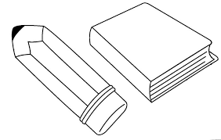

| "PRODUCTOS DISPONIBLES
Cuadernos
Lapicero
Sacapuntas
Crayones
Libro de Lectura
Juegos de Gecnetcia
Legos
Tableros
Lana
Coma
Harcadores
Blocks
Hojas Caeta 9 oficlo
Poldere
canchom
Papel Lastre
Papel China
Papel Celozan
sakin Tapa
munca para ancadorem
"Librezia Eaneralda» es una librezia que abre sus pueztas al público en 1988 Y cuenta en la actualidad con 5 sucursales en toda la zepública.
Desde 1989, en colaboración con la municipalidad organizanos la Poria del Lapiz, duzante los dias del 30 de septienbre al 16 de octubre, ambos inclusive, en horario de 1l de la mañana a 9 de la noche, ininterzumpidamente, en el Paseo San Juan.
Ea cale 11-50 zona 10,
Tel:: 2658-9374/76 178 F zz: 2658-9881 / 83
Web.wra Bbrenuesmeralda.com ge-mal; coctactos@Sbrenzemeralda.com g
Guatemala, C.A
Buscar
20°C Soleado ^
ЛОС" |
 |